Dissonance fête ses 10 ans ou « comment je suis devenu un agent russe ! »
Alors que DISSONANCE fête ces 10 ans c’est l’occasion idéale pour revenir sur cette décennie d’écriture, de dénonciation des mythes sur la Russie mais aussi l’affrontement (gagné) contre la presse française qui a donné lieu à la naissance d’un autre mythe :
faire de moi un authentique agent russe …
Diantre ! Voilà comment tout a commencé ….
2007, 2008, 2009
Un soir de décembre 2007, j’ai ouvert ce blog et écrit un premier article1 sur les élections en Russie. L’idée de ce blog était simple et saine : devenir ce que l’on nomme un Blogueur soit l’émanation la plus aboutie de la société civile sur Internet.
Quelqu’un qui bénévolement travaille et s’attache à fournir « au monde » de l’information, de la matière, du contenu sur un sujet. Un contenu destiné à alimenter les esprits et ouvrir d’autres pistes de réflexions. Un blog aussi pour donner la parole a des gens qui ne l’ont d’habitude pas, et en tout cas certainement pas assez.
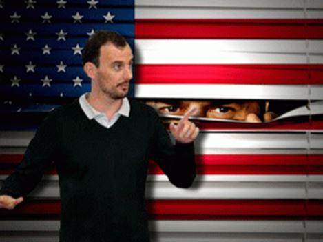Rapidement, Dissonance a trouvé via les réseaux sociaux une forme de résonance tout à fait inattendue puisque je crois qu’à l’époque, pour une génération d’Européens, il était assez clair et facile à ressentir qu’il se passait quelque chose en Russie.
Nous étions à la même époque en 2008 en train de faire face à la crise américaine des subprimes qui, le moins que l’on puisse dire, a eu pour conséquence de mettre en évidence les limites structurelles et systémiques du système occidental 2.
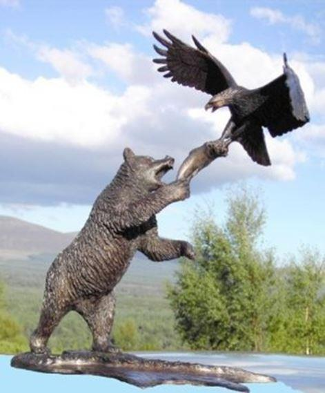C’est sur la plateforme Agoravox que les articles de Dissonance prirent de la visibilité, puisqu’Agoravox les faisait apparaître dans le Feed de Yahoo actualités. Les premiers thématiques qui firent le petit succès de ce blog obtinrent une surprenante résonance que ce soit l’explication de la forme circulaire3 de la scène politique russe (par opposition au linéaire droite-gauche de la scène française), l’avenir des lignes énergétiques civilisationnelles4, l’avenir de la route de la soie5 et de l’arctique6, l’émergence du monde multipolaire, la fin du monde unipolaire7 ou encore l’analyse de la démographie russe8.
Dans le même temps, au cœur de l’été 2008, la crise de Géorgie et la guerre de Géorgie, mirent en évidence l’insupportable couverture médiatique des médias occidentaux et révélé leurs mensonges, leur médiocre capacité d’analyse et de compréhension mais aussi et surtout leur double standard9 systématique, surtout concernant la Russie. Rapidement, j’allais passer une grande partie de mon temps à « commenter » par le biais des forums les articles de presses français. Cela déclencha une hystérie de la part de certains journalistes français qui ne supportaient pas, et ne supportent toujours pas la critique.
Ces prises de positions citoyennes lancèrent réellement Dissonance sur ce qui allait être un de ses principaux créneaux de combats intellectuels : la lutte contre la désinformation10 des médias français, plus tard qualifiée de russophobie médiatique11. Bénévolement et par foi, bénévolement et par volonté unique que ne cessent les mensonges et la propagande. Une passion que durant de nombreuses années j’ai partage avec Arthur dont il faut reconnaitre le travail colossal fourni à ce sujet, tout comme Jean Yves Le Gallou qui a parfaitement dévoilé cette tyrannie médiatique et que j’ai eu la grande chance d’interviewer12 !
Au cours des mois qui suivirent cette période, Dissonance apparu de plus en plus comme le seul blog politique traitant de la Russie de façon non russo-hostile.
En 2009 Dissonance passa un palier de visibilité et de reconnaissance avec la publication de « Moscou capitale de la civilisation européenne13 » (ce qui fut affirmé par Vladimir Medinski14 le ministre de la culture 6 ans plus tard J) mais aussi et surtout des « Mythes Russophobes15 » (24 000 lectures !) qui furent traduits en de nombreuses langues étrangères et reprises sur un important nombre de supports internet.
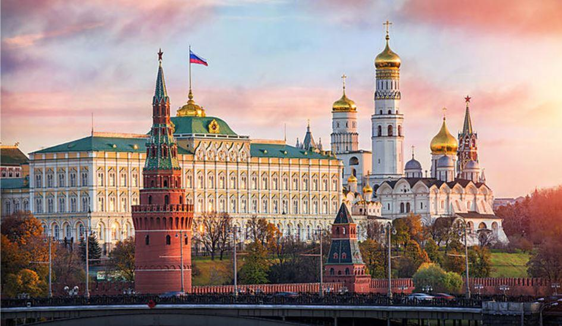
2010, 2011
« Parler de la Russie » en dénonçant les mensonges et approximations de la presse française, ou comment je suis devenu l’ami Numéro 1 des journalistes français …
C’est vraiment à partir de 2010 qu’une amitié forte se noua entre Dissonance et les journalistes français puisqu’au cours de l’été 2010, alors que Moscou était dans la fumée de gigantesques incendies au cœur des forets qui entourent la ville, les Français de Russie assistèrent à un déchaînement de propagande occidental et notamment français avec l’obsession de ce qu’ils avaient décidé d’appeler : « la faillite du système Poutine16 ».
Pour se donner une idée du niveau de propagande atteint il faut relire cette petite synthèse17 et se rappeler qu’alors que les journalistes français nous assuraient que tout était caché, le Google russe propose toujours et depuis bien longtemps un suivi à jour des incendies dans le pays comme on peut s’en assurer sur http://pozhar.yandex.ru, à condition bien sûr de parler russe. Au milieu de ces incendies, je parvins néanmoins à nouer une trop brève romance avec la correspondante Dorothée Ollieric qui, il faut bien le reconnaitre, avait plus que passé les bornes18.
L’année 2011 fut du reste riche en évènements avec Bolotnaia qui nous fut présenté comme une sorte de révolution de type mai 68 russe19 et qui aurait dû déboucher sur une « chute » de Vladimir Poutine et du pouvoir suite à des « fraudes » qui il s’avère n’ont finalement pas dépassé les 10 % et ont été considérablement exagérées20 par les médias occidentaux et d’opposition russe.
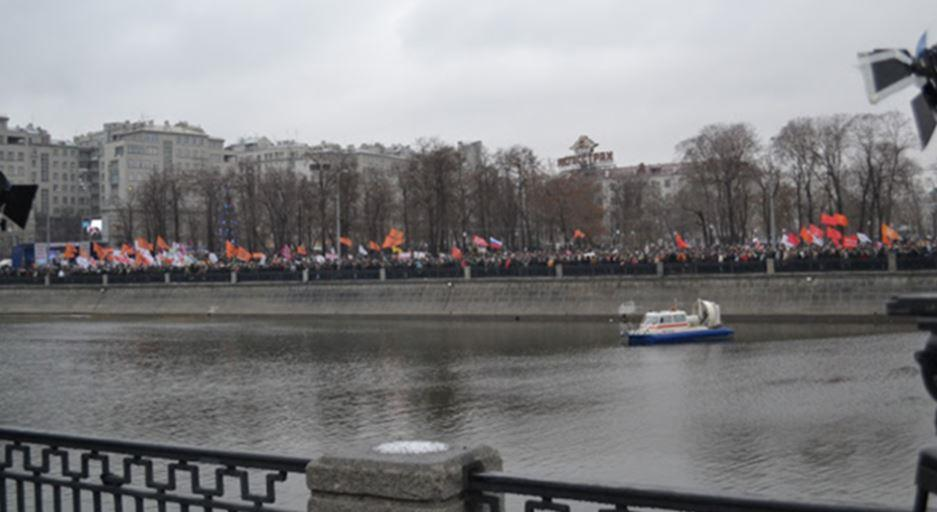En Syrie, cette année 2011 marqua le début d’une guerre terrible21 qui à l’époque devait ne durer que quelques mois et faire tomber Assad mais qui a l’heure où j’écris ces lignes, semble plutôt partie pour voir la victoire de ce dernier. Une guerre pour l’énergie22 ? Il est intéressant de se réécouter23 à ce sujet 6 ans plus tard et de re-admirer le sublime esthétisme24 du projet GRANews, sans doute mort trop tôt.
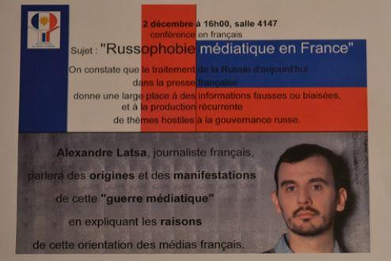On en rigole encore 6 ans plus tard mais il est toujours utile de se rappeler à quel point les immixtions étrangers étaient réelles et à quel point il était évident pour ceux qui avaient participé à ces évènements à quel point il n’y avait aucune chance que Bolotnaia n’aboutisse à quoi que ce soit. Sauf bien sûr pour les journalistes et analystes français dont la paranoïa atteint ses premiers sommets médiatiques de la décennie.
Cette offensive médiatique de désinformation pris une tournure sordide lorsqu’au cours de ces manifestations, la presse française falsifia des photos pour victimiser des manifestants qui en réalité attaquaient les forces de l’ordre comme on peut le voir sur le lien : http://alexandrelatsa.ru/2012/05/manipulation-des-images-et-guerre-mediatique/. On nous expliqua même que ces manifestants contre Poutine étaient des « milliards25 »
Cette hystérie des médias occidentaux à mentir, mentir et encore mentir donnera notamment lieu à une conférence au mythique MGIMO dont je promets dans un avenir proche de révéler prochainement à mes lecteurs certains détails croustillants concernant le backstage de l’organisation…
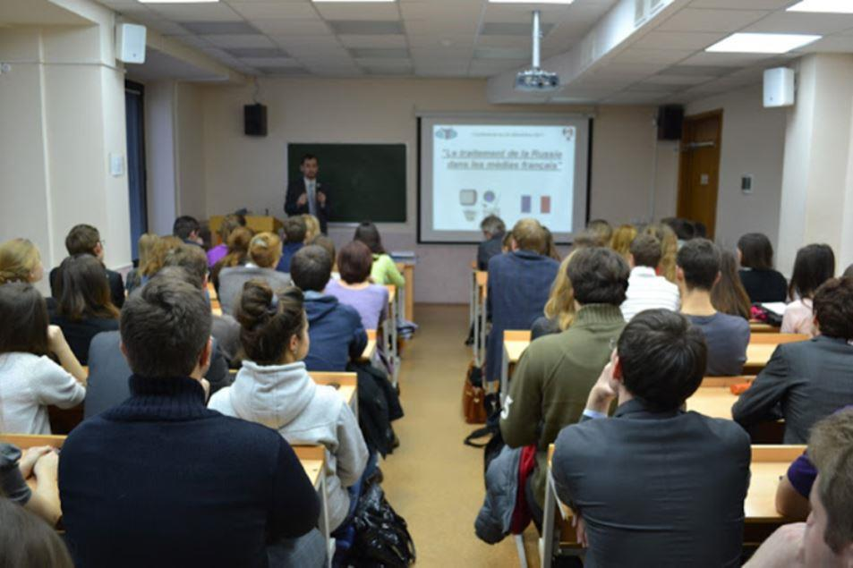Seulement quelques mois après Bolotnaia, l’opposition russe ne pouvait que rassembler moins de 10.000 personnes26 au centre de Moscou tandis que Vladimir Poutine était élu.
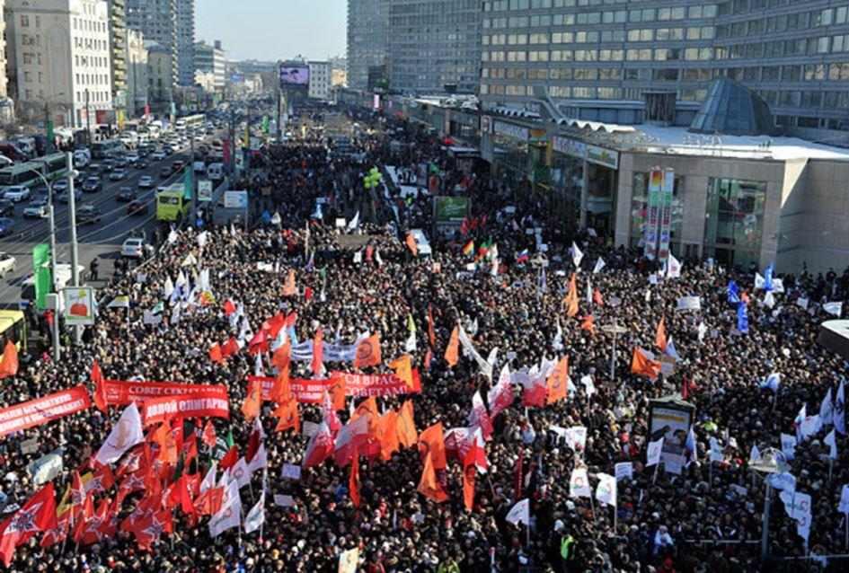
Dans le coin gauche (en bas) de la photo on peut apercevoir les drapeaux du groupuscule d’ultra-gauche Levi-Front (front de gauche) dirige par Serguey Oudaltsov… Les drapeaux oranges sont les drapeaux de l’association libérale Solidarnosc…
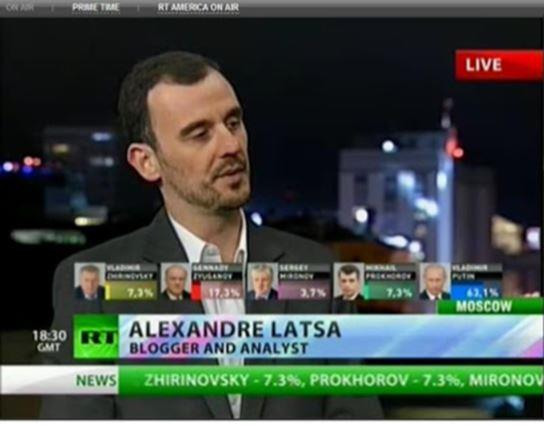2012
Vox Populi Vox Dei ! Tandis que, sans surprises sauf bien sûr pour les journalistes et analystes français, le peuple russe portait Vladimir Poutine au pouvoir jusqu’en 201827, (avec 64 % des voix) ! Quel bonheur d’être sélectionné pour faire le Live en direct sur RT et de tenter de ne pas montrer à quel point il neigeait dehors et que donc globalement il faisait froid sur la terrasseJ).
L’élection française elle vit la victoire de François Hollande. Mais comment pouvait-il en être autrement alors qu’en France au JT de TF1, Claire Chazal demandait a Djamel Debbouze28 son opinion sur la possible réélection de Poutine et que celui-ci affirmait que « Poutine ne doit pas passer »….
Les victoires de Vladimir Poutine et de François Hollande allaient permettre l’avènement de deux dynamiques préparant très clairement la situation qui est celle que nous connaissons actuellement de rupture « civilisationnelle », « sociétale » entre ces deux pays.
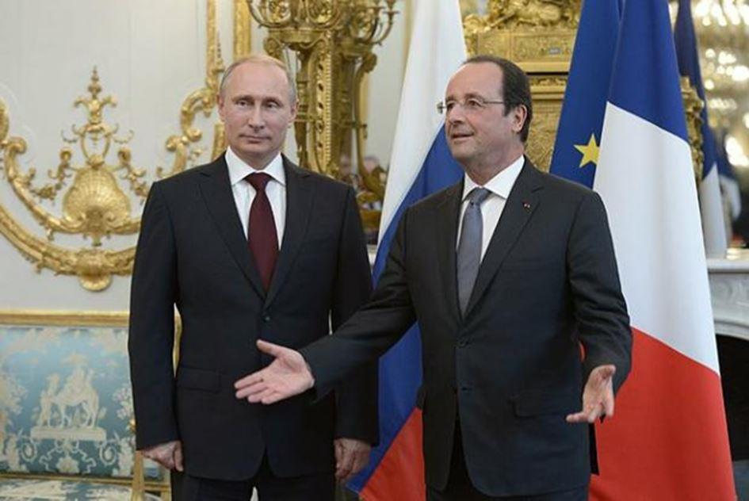Je n’aurais pas pu imaginer à ce moment qu’une brève joute29 contre les élections contre la fausse spécialiste de la Russie qui n’existe plus (la Russie Soviétique) allait la fâcher suffisamment pour qu’elle écrive plusieurs années un excellent ouvrage de science-fiction30, ouvrage écrit au principalement conditionnel et traitant d’hypothétiques réseaux russes qui n’existent malheureusement pour elle pas plus que Lara Croft.
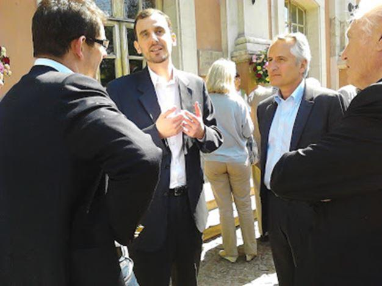2012 fut aussi une année intéressante, orientée sur la culture et l’Oural31 et avec notamment une visite intéressante à Moscou des lecteurs de Valeurs Actuelles32 tandis que alors que les incendies de 2010 ne purent vaincre Poutine, la presse française nous fit le même coup mais cette fois avec des pluies abon-dantes33 qui devaient prouver l’échec du système Poutine.
Caramba encore raté !
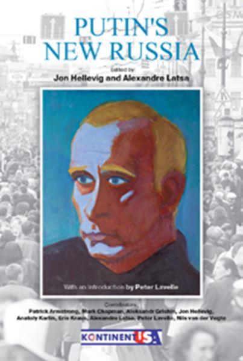2012 marqua également ma collaboration avec l’incroyable Jon Hellewig34 qui aboutit à mon premier livre. Co-écrit et conçu avec lui, en deux langues et que l’on peut acheter ou télécharger gratuitement en anglais et en russe.
2012 fut aussi l’année ou l’inégalable Pierre Avril me consacra un article dans le Figaro en réalisant l’exploit, c’est un exploit, de se tromper plusieurs fois à mon sujet sur la première page. Je cite : « Le jour, Alexandre Latsa est consultant dans un cabinet de conseil à Moscou. La nuit, ce Français de 35 ans part en guerre, sur la Toile, (…) Vingt ans plus tôt, en 1995, c’est pour la Serbie qu’il avait pris fait et cause. »
J’ignorais être engagé pour la Serbie a 15 ans et en 1995 (j’avais 17 ans) mais bon la presse française ose tout c’est à ça qu’on la reconnait. Le plus génial est de lire les commentaires de l’article, dont plus de la moitie ont été écrit par des membres de la communauté française en Russie qui sont mes lecteurs, un régal.
2013
L’année d’après c’est mon premier livre en russe qui fut publié, « Mythes sur la Russie » qui racontait mes 5 premières années en Russie et mon regard sur ce pays. Le livre fut plutôt bien accueilli même si j’ai su bien après que beaucoup de mes lecteurs russes auraient attendu un livre plus politique et moins léger, il en faut pourtant pour tous les publics.
Cette même année, Gérard Depardieu devenait russe et la Russie apparaissait de plus en plus comme un authentique modèle alternatif, ce qui s’avère, 5 ans plus tard de plus en plus le cas.
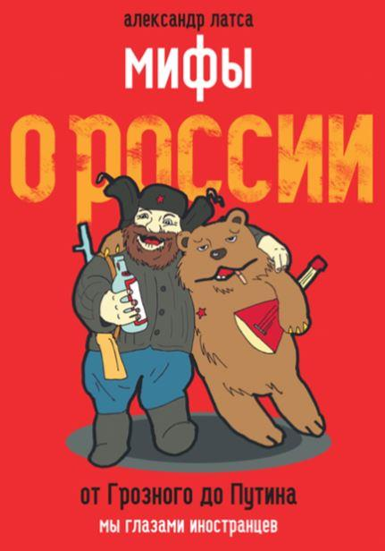Cette année 2013 marqua aussi un premier virement en Syrie puisque contrairement à ce que nous annonçaient la presse française et tout le mainstream médiatique35 et 36, l’Etat et l’armée Syrienne résistaient aux puissances qui organisaient l’agression par des dizaines de milliers de combattants armées qui envahissaient le pays pour le détruire. Assad allait il gagner37 comme c’était écrit sur Dissonance ?
Être blogueur amène à tout et notamment à être contacté par l’avocat de Radovan Karadzic38 pour le mettre en lien avec un témoin dont le témoignage allait s’avérait plus qu’intéressant et non aligné avec ce que la presse française et les témoins masqués et anonymes du TPI peuvent affirmer.
C’est avec RFI que j’ai eu la chance de pouvoir échanger par emails et messages sur réseaux sociaux en 2013, lisez c’est croustillant39 …
Mais en 2013, un grand malheur commença, en Ukraine où des manifestations40 de mécontentements allaient dégénérer en un conflit qui 4 ans plus tard n’est pas fini. Le rêve européen41 de l’Ukraine allait se briser sur la lâcheté des occidentaux et la résilience du monde russe, quelque part par-delà les frontières.
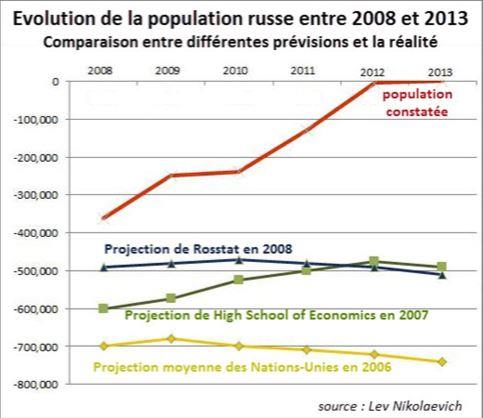A un malheur son bonheur : 2013 fut la première année depuis 1991 qui vit la Russie connaître une hausse naturelle de population42. Les lecteurs de Dissonance le savent, j’ai au cours des 10 dernières années tente d’observer, analyser et commenter la démographie en Russie de façon neutre, prévoyant que les prévisions dépressives qui annonçaient la disparition du pays ne pouvaient être prises au sérieux.
Au cours des 6 premières années de son existence, DISSONANCE devint de plus en plus populaire, et il faut être un blogueur honnête pour publier les statistiques de son blog sans complexes.
2014
L’année commença avec les JO de Sotchi, les jeux d’hiver qui ont été sous une pression médiatique hors du commun et que j’ai tenté de résumer et dévoiler dans un article de synthèse43. Le temps long joue toujours pour la Russie puisque c’est le Washington Post qui a récemment reconnu (en novembre 2017) que l’investissement russe pour les jeux et pour la ville et la région finalement valait le coup44.
Mais en 2014 c’est l’Ukraine qui sera au centre des réflexions de DISSONANCE. L’Ukraine car avec Maïdan, une nouvelle guerre fraîche allait voir le jour et la lente transformation de l’Ukraine en un abcès géant au cœur de la grande Europe, un abcès miné par une guerre dans le Donbass que l’Etat ukrainien allait perdre de la pire des façons, sacrifiant plusieurs milliers de ces soldats pour une cause perdue.
La guerre en Ukraine s’accompagne d’un rouleau compresseur médiatique sans précèdent destiné à présenter aux français l’affaire ukrainienne de façon manichéenne et basée sur des doubles standards45, des mensonges et des mythes46, dénoncés sur ce blog. L’Ukraine libérée ne vit pas de miracle arriver mais au contraire une aggravation de la situation morale, politique, économique et militaire du pays.
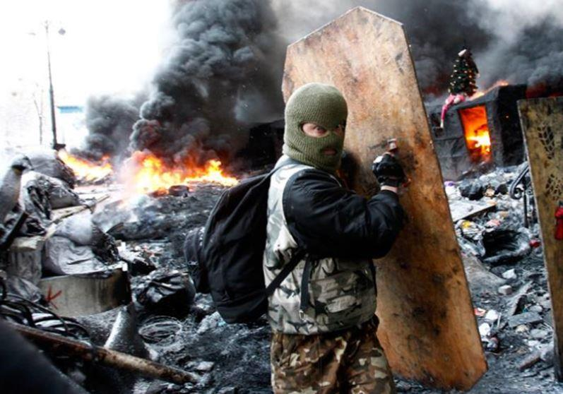Malgré tous ces évènements, le corps électoral russe ne se laissa lui pas berner et les élections de 2014 virent le maintien des équilibres politiques47 que le pays connait depuis mars 2000.
Au même moment soit au cœur de l’automne, j’ai eu la chance de pouvoir prendre la parole au siège de l’UMP dans le cadre d’une conférence à la Droite Populaire48, dont la branche jeunesse était tenue alors par l’excellent Pierre Gentillet49 avec qui j’ai signé une tribune sur les mythes de la Russie de Poutine50 puis une autre sur l’intérêt pour la France de regarder vers Moscou52, avec également l’excellent ex-député des Français de notre circonscription : Thierry Mariani53.
En 2014 j’ai vécu de grands moments médiatiques avec une interview surréaliste sur LCI ou l’on me qualifia du « point de vue russe54 (SIC) » et ou le journaliste tenta de m’expliquer, quelques jours après Odessa, que les groupes armes et radicaux étaient « les groupes pro-russes ». En revoyant cette interview je ne sais pas pourquoi je ne l’ai pas juste remis à sa place en l’accusant de propagandisme de grande ampleur en direct …
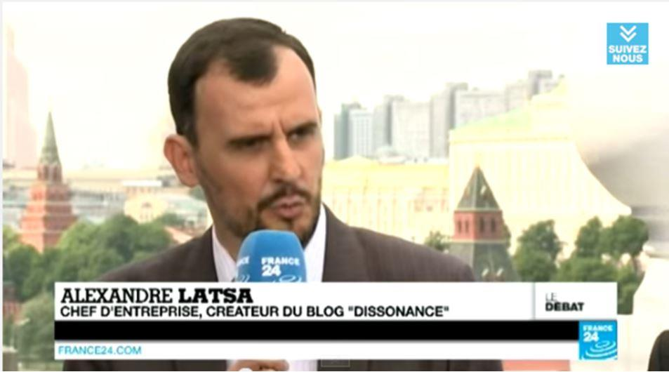Un autre grand moment aura été le débat sur France 24, avec des invités russes, journalistes de l’opposition russe au Kremlin nous expliquant que le climat de la Russie de 2014 était similaire à celui de l’Allemagne nazie (!) …
Non ce n’est pas la chaine de la Corée du nord, c’est la télévision française : LCI et France24 …
2014 continua à démontrer que mes pronostics sur le redressement démographique russe était une réalité puisque pour la seconde année consécutive la démographie russe fut naturellement positive, même sans l’immigration. Ce redressement démographique n’échappa à personne sauf à l’inégalable Pierre Avril qui parla encore de « prétendue55 » hausse des naissances sous Poutine. Un nombre de naissances passées pour info de 1,2 à 1,9 millions tout de même, défiant au passage tous les pronostics démographiques les plus pessimistes, ceux de la CIA, de l’ONU et de la HSE russe. L’année 2014 fut importante sur le plan démographique et me permis de briser des mythes supplémentaires en analysant la démographie des russes et des russiens et en dénonçant le mythe d’une natalité musulmane56 mettant en danger la Russie.
2014 transforma une autre de mes prédictions de 200857 en réalité : le printemps de Crimée58 acheva la fin du monde unipolaire et acheva définitivement sans doute la parenthèse ouverte par le consensus de Belgrade qui ouvrit au cours de ce siècle l’extension de l’OTAN a l’est vers les frontières russes.
Mais pour un bien, un mal et la fin de cette année 2014, plus au sud, un cancer nommé Daech vit le jour dans l’est de la Syrie, un cancer dont la force de frappe fit pencher la balance dans le mauvais sens en Syrie, mettant pour la seconde fois en danger la stabilité de l’Etat et la sécurité de millions de civils.
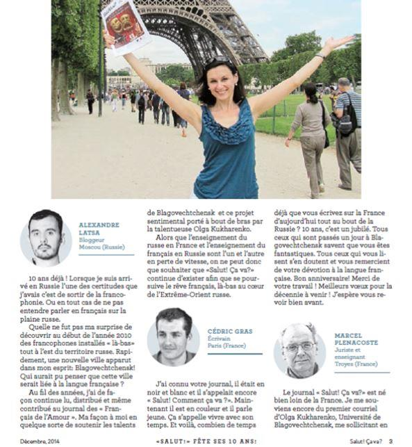Il est enfin impossible de parler de 2014 sans citer l’anniversaire de l’incroyable Salut Ça Va 59, vecteur de la francophonie au cœur de l’extrême orient, sur la frontière chinoise, et dirige avec talent et grâce par l’incroyable Olga60 et de l’interview que j’ai pu réaliser de Maurice Dantec61 …
L’année se termina avec les vœux de Poutine62 et moi les vœux de Poutine ça me fait toujours plaisir.
2015
L’année 2015 fut l’année de ma collaboration avec Sputnik pour qui j’ai écrit 58 textes en 12 mois63.Cette collaboration fut un grand sucées puisqu’à la fin de l’année mes textes obtinrent pour certains près de 30 000 lectures uniques uniquement sur le site de Sputnik.
L’année commença avec la mort de Boris Nemtsov64 puis les attentats à Charlie Hebdo65, faisant, c’est peu dire, passer la France en terme statistiques pour l’année devant la Russie dans le rating du nombre de journalistes assassinés par pays. Au milieu de l’année, c’est sur l’Ukraine que nos inquiétudes se portèrent puisque le pays voyait s’accélérer la spirale démographique66 catastrophique qui était la sienne tandis que Xavier Moreau rappelait, a l’occasion de la sortie de son livre à quel point la France s’était trompée67. Mais les médias français étaient eux obsédés par une supposée usine à trolls pilotée par le pouvoir russe, usine à trolls au sein de laquelle une centaine d’étudiantes payées 300 dollars par mois mettaient en danger 28 pays de l’UE, ne riez pas c’est sérieux, ce n’est pas le GORAFI…
En Syrie, alors que tout pouvait sembler perdu, l’EI en 9 passa du contrôle de 10 % à près de 50 % du pays tandis que l’Armée syrienne ne semblait pouvoir faire face au nombre croissants de fronts militaires qui s’ouvraient chaque mois. Tandis qu’une nouvelle réalité semblait s’installer68 qui aurait pu voir la chute du régime, un évènement politique allait changer la donne, l’intervention russe69 en septembre 2015, tandis que toute la presse française nous expliquait, le Monde en tête70 que le Kremlin lâchait Assad. La folie de la presse française de 2011 à 2015 pour nous assurer, quel que soit le média, que Poutine allait lâcher Assad71 reste à ce jour, absolument incompréhensible … Quelle incompétence …
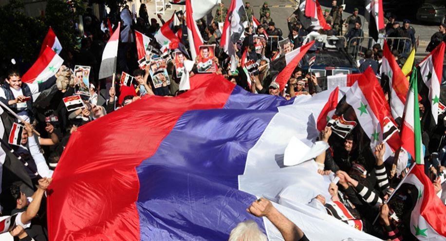Sans trop de surprises, dès cette intervention militaire, malgré la pluie de critiques de la presse française, il n’était pas impossible de prévoir que la fin de l’EI allait arriver grâce à la Russie. Il faudra cependant attendre fin 2017 et un article du colonel Michel Goya pour synthétiser que la Russie, avec peu de moyens a réussi son pari militaire, que Daech a été vaincu militairement, et que désormais Assad est certain de gagner cette guerre. Une victoire qui va finir par aggraver les dynamiques migratoires73 qui se sont abattues sur l’Europe et la France, avec l’appui de réseaux organisés74.
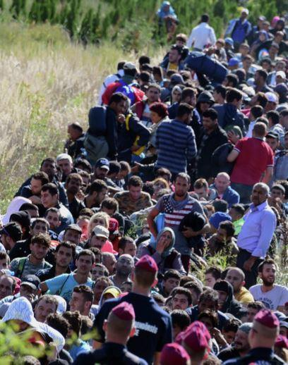2015 fut l’année où j’émis une idée folle que la France rejoigne l’Organisation de Shanghai75 et se rapproche toujours plus de Moscou et Pékin tandis que la Russie était au milieu d’une crise économique dont elle n’allait finalement mettre que deux ans à sortir, son économie s’avérant toujours plus résiliente76 que prévue.
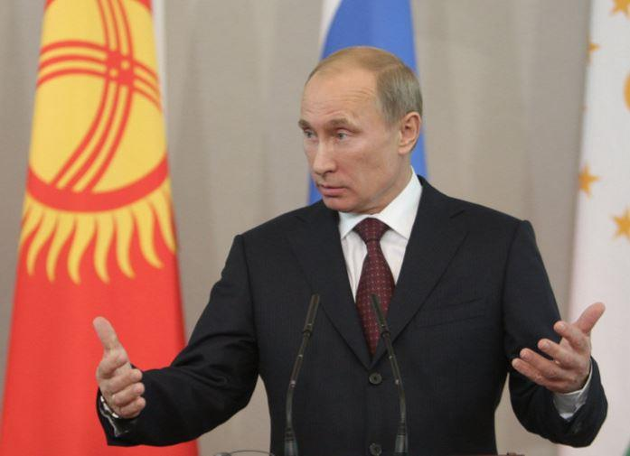2015 fut surtout la première année où le régiment immortel défila dans le centre de la capitale russe. Le 9 mai n’est jamais une journée comme les autres en Russie mais ceux qui ont pu vivre la journée du 9 mai 201578 dans les rues de Moscou ne l’oublieront sans doute jamais.
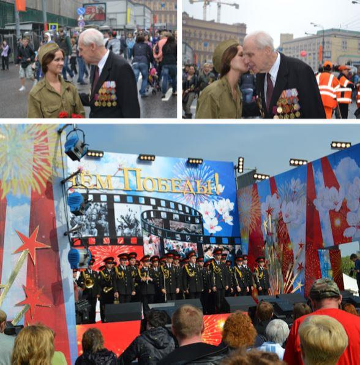Il fallait être à Moscou pour ressentir cette atmosphère absolument incroyable de fierté et de patriotisme mais aussi et surtout d’unité nationale puisque dans tout le pays, ce sont 12 millions de russes qui ont participé aux cérémonies. 500.000 personnes ont rejoint les rues de la capitale, des moscovites de tous âges, certains en tenue militaire, arborant le ruban de Saint Georges orange et noir.
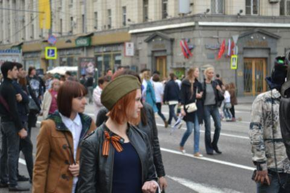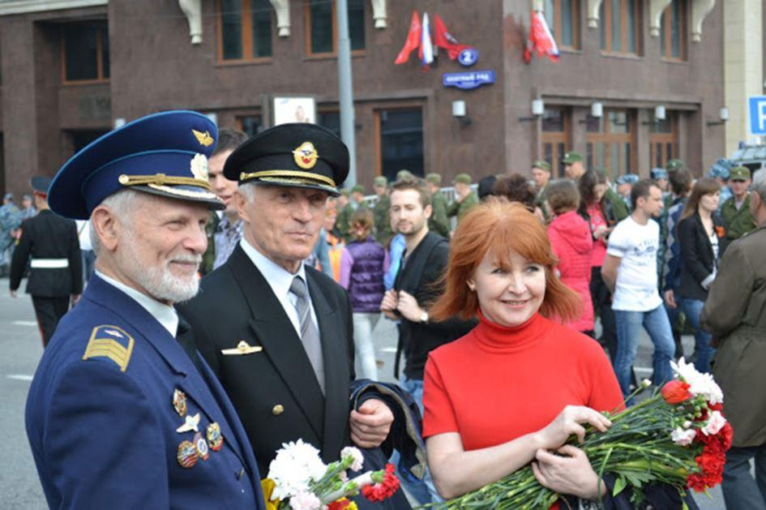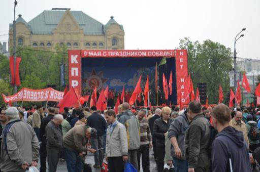Il fallait définitivement être à Moscou pour voir ces quelques 150.000 russes qui défilaient portaient de leurs ancêtres à la main, dont de nombreux enfants et femmes et les entendre crier « Hourra ! » à pleins poumons en traversant le centre de la capitale. Seule la Russie de Vladimir Poutine est sans doute capable au sein du monde européen de produire cette extraordinaire communion patriotique et populaire dans une totale sérénité.
Mais 2015 vit aussi la fin de ma collaboration avec les agences d’état russe, principalement par manque de temps, car contrairement aux ragots, bruits de fonds et mensonges éhontés, ce n’est pas le Kremlin qui nourrit les français pro-russes, ils sont contraints de le faire eux-mêmes.
Je tiens néanmoins à remercier mon ami H (il se reconnaitra) qui m’a fait rentrer à RIA Novosti car rien de tout cela ne serait sans doute arrivé à cette échelle sans l’excellente idée de RIA-Novosti en 2010 d’ouvrir dans ses pages en français une chronique de blogueurs, russes ou étrangers, qui avaient comme mission d’écrire en français et de décrire la Russie d’aujourd’hui. Des gens de toutes origines et de toutes opinions politiques puisqu’en 2011 lors des évènements de Bolotnaia, certains critiquèrent, d’autres participèrent, peut-on imaginer une telle diversité à l’AFP ?
Ma collaboration avec Rossia Segodnja, d’abord via RIA puis Voix de la Russie et enfin Sputnik dura exactement 5 ans du 24/11/2010 au 24/11/2015, quelle incroyable correspondance de dates. Au cours de ces 5 intenses années, j’ai eu l’immense privilège d’être considéré par nombre de personnes comme un « agent russe » et par notre spécialiste de cuisine de la Russie Soviétique comme « le produit du Kremlin le plus efficace » ! Diantre rien que ça, c’est vrai, il faut le reconnaitre, que Latsa sur Sputnik a eu pour ses articles plus de lecteurs que le correspondant du Monde ou du Figaro sur leurs supports respectifs et que tout le courrier de Russie avec sa rédaction complète en 2009, 2010 … (à ce titre il faut reconnaitre que le CDR s’est LARGEMENT amélioré au cours des dernières années et après le départ de certaines stagiaires confondant la place rouge avec les amphis de leurs facs de lettres…).
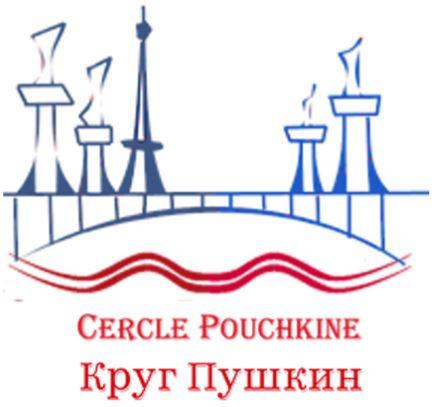Plus sérieusement, 270 articles pour Rossia Segodnja en 5 ans (il faut déplier la liste des article79 pour s’en rendre compte signifie surtout 54 articles par an, soit 4,5 par mois soit plus d’un par semaine, un rythme de travail colossal et largement supérieur à celui des correspondants de presse du Mainstream francais qui sont bien souvent plus bêtes, fainéants et incompétents que méchants. Un mainstream mais dont Piotr Smolar reconnaitra la défaite face aux militants de la vérité (bloggeurs et analystes non alignés), au cœur de la guerre en Ukraine et juste après le massacre d’Odessa.
Enfin, 2015 vit le lancement du Cercle Pouchkine80 dont j’ai le grand privilège d’être un des parrains.
2016
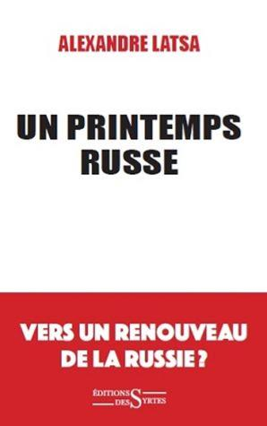2016 fut une année de grande synthèse avec la sortie de mon premier ouvrage en français : #UnPrintempsRusse aux éditions les syrtes. Un ouvrage qui résume ma compréhension de la Russie de 1991 à 2016 et qui tente de donner des clefs de compréhension de la Russie d’aujourd’hui.
Cet ouvrage fut l’occasion d’une tournée sympa à Paris de présentation du livre au cours du printemps 2016 et une seconde au cours de l’automne 2016.
Quelques interviews vidéos ici au Dialogue franco-russe / Cercle Pouchkine, a l’extraordinaire librairie Pedone, MediaPresseInfo, au Cercle Aristote et bien sûr TV Libertés.
Quelques premières interviews radios (c’est sympa la radio) pour radio Notre Dame, Radio Courtoisie ou encore Sputnik.
#UnPrintempsRusse réussi même à percer le barrage mainstream avec des recensions sur le Figaro, la Nouvelle revue d’histoire, Valeurs Actuelles, Eléments ou encore la revue Conflits.
Quelques interviews inattendues pour Al-Bayane et Radio J Marseille.
La sortie de l’ouvrage fut aussi l’occasion de donner quelques interviews pour le Saker, le Rougeetlenoir, Polemia, nouveau cénacle, le think-tank France Renaissance ou Nouvelles de France, Ours magazine ou Politique Magazine.
Enfin je remercie du fond du cœur Fréderic Saillot qui a repris le flambeau de Balkans Infos et dirige maintenant Eurasie Express pour toutes ces vidéos et notamment mes commentaires sur les élections législatives russes81 ou sur cette idée de voir la France intégrer l’Organisation de Shanghai82.
Quelle année !
2017
Fut du point de vue de l’écriture une année assez calme, et malgré de grands moments de politique française à Moscou avec notamment la visite de Jean Fréderic Poisson et un discours authentique devant la communauté française appelant à démai68-tiser la France83, ou une conférence au MGIMO sur la géopolitique française en cas de victoire du candidat conservateur à la primaire, rien n’y a fait. Pas de nouveau De Gaulle84 à l’horizon mais la victoire d’Emmanuel Macron par un coup d’état médiatique85.
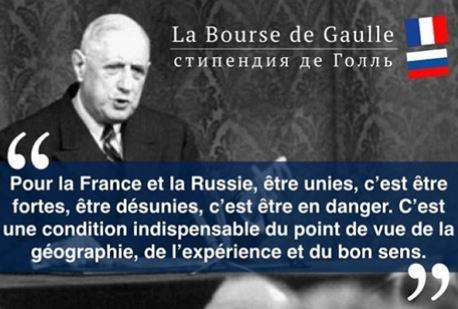2017 vit enfin la Bourse De Gaulle86 réaliser son premier voyage en Russie et, ce n’est pas rien, une longue interview de votre serviteur sur l’Eurasie, dans la lettre de l’Association Nationale des Auditeurs Jeunes de l’Institut des Hautes Etude de Défenses Nationale !
En cette fin d’année, alors que les élections présidentielles russes s’approchent, nous avons discuté avec Xavier Moreau et Yan Avril sur le Mai68tisme qui coule dans les protestations anti-Poutine.
***
Alors que DISSONANCE fête ces 10 ans, je tiens à donner quelques chiffres.
DISSONANCE c’est 10 ans d’écriture, 1.621 articles, des articles traduits et republiés, en 12 langues (français, russe, anglais, allemand, arabe, italien, espagnol, portugais, slovaque, grec, hongrois, roumain), 3 livres en 4 langues et 21.000 tweets.
Une certitude est née : grâce à Internet, la propagande des médias Mainstream peut être combattue et même vaincue, il suffit d’y travailler.
C’est pour ça que la vérité a pu éclater en Ukraine et que cela n’a pas été le cas pour la Serbie au cours de la dernière décennie du 20ieme siècle et le pays a servi de laboratoire. Car à cette époque-là, il n’y avait pas internet pour permettre aux serbes d’être défendus.
L’avenir ?
DISSONANCE ne fermera pas même si le rythme de publication sera sans doute plus faible qu’avant car the job is done comme disent nos partenaires américains !
Néanmoins, quelques bonnes surprises sont en préparation et notamment un nouvel ouvrage en français mais pas que …
Pour me suivre d’ici-là, rendez-vous sur twitter où je poste de façon journalière.
3 De la politique en Russie https://www.agoravox.fr/actualites/politique/article/de-la-politique-en-russie-37963
4 Energie et orthodoxie https://www.agoravox.fr/tribune-libre/article/energie-et-orthodoxie-39201
5 Le pont ferroviaire eurasiatique, nouvelle route de la soie du XXIe siècle ! https://www.agoravox.fr/actualites/international/article/le-pont-ferroviaire-eurasiatique-39950
6 Bataille pour l’Arctique https://www.agoravox.fr/actualites/economie/article/bataille-pour-l-arctique-42186
7 Vers la fin du nouvel ordre mondial ? https://www.agoravox.fr/tribune-libre/article/vers-la-fin-du-nouvel-ordre-43196
65 Réflexions sur la France de Charlie Hebdo https://fr.sputniknews.com/points_de_vue/20150128203506694/
66 L’Ukraine au bord du gouffre démographique https://fr.sputniknews.com/points_de_vue/201506111016522445/
67 Ukraine : pourquoi la France s’est trompée https://fr.sputniknews.com/points_de_vue/201509301018508376/
68 Vers une nouvelle réalité en Syrie https://fr.sputniknews.com/points_de_vue/201505181016130833/
69 Inefficaces les frappes russes ? https://fr.sputniknews.com/points_de_vue/201511201019679441-syrie-frappes-russie-ei/
70 Moscou prend ses distances avec Damas http://www.lemonde.fr/proche-orient/article/2015/06/03/moscou-prend-ses-distances-avec-damas_4646274_3218.html
71 La presse française et la Syrie : Incompétence ou mauvaise foi ? http://alexandrelatsa.ru/2015/09/la-presse-francaise-et-la-syrie-incompetence-ou-mauvaise-foi/
72 Offensive médiatique contre l’intervention russe en Syrie https://fr.sputniknews.com/points_de_vue/201510051018597852-syrie-russie-frappes-media/
73 Migrants : une invasion soutenue ? https://fr.sputniknews.com/points_de_vue/201509211018290081/
74 Vague de migrants en Europe : vers la piste américaine ? https://fr.sputniknews.com/points_de_vue/201509241018382147/
75 Et si la France rejoignait l’organisation de Shanghai ? https://fr.sputniknews.com/points_de_vue/201503231015293697/
76 Où en est la Russie en mai 2015 ? https://fr.sputniknews.com/points_de_vue/201505281016304147/
77 https://www.youtube.com/watch?v=B8tmji_2Q3w
78 9 mai 2015 : Moscou capitale du monde libre http://alexandrelatsa.ru/2015/05/9-mai-2015-moscou-capitale-du-monde-libre/

Partager cette page